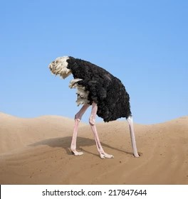
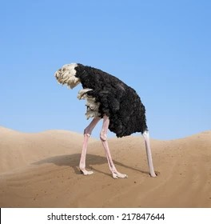

My philosophy of Diversity, Equity, and inclusion (DEI) lies in understanding and recognizing that every individual is unique and ensuring equality for all (SDGs-5). The importance of DEI came into play when I was appointed in January 2023 as the Anambra state coordinator for differently-abled people. I strived to ensure equity and equality in all my dealings. The incident that stuck with me was that of my childhood friend who was involved in a fatal accident that led to the amputation of her legs making her wheel-bound. I watched her strulth and my friend wanted to go with me but the center is not wheelchair accessible limiting my friend and others like her from attending. I was deeply troubled and decided to take action towards inclusion. We embarked on a street walk campaign to advocate crowd support to aid the event management team in fostering inclusion for all. My dedication to fostering an inclusive center for all began to inspire more people.
My philosophy of Diversity, Equity, and inclusion (DEI) lies in understanding and recognizing that every individual is unique and ensuring equality for all (SDGs-5). The importance of DEI came into play when I was appointed in January 2023 as the Anambra state coordinator for differently-abled people. I strived to ensure equity and equality in all my dealings. The incident that stuck with me was that of my childhood friend who was involved in a fatal accident that led to the amputation of her legs making her wheel-bound. I watched her struggle with her new identity and lack of access to basic opportunities like running, and dancing. She loves dancing, which deeply affected me and inspired me to take action. I was invited to speak at a local community center on Menstrual health and my friend wanted to go with me but the center is not wheelchair accessible limiting my friend and others like her from attending. I was deeply troubled and decided to take action towards inclusion. We embarked on a street walk campaign to advocate crowd support to aid the event management team in fostering inclusion for all. My dedication to fostering an inclusive center for all began to inspire more people.
 
